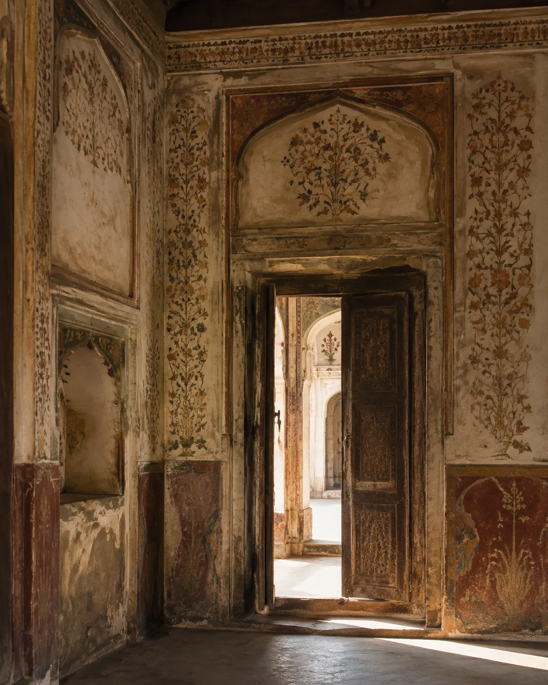

DEMO — Notes from a painted courtyard
A development-only example showing how a researched place story can unfold through images, quotations and references.
By Virsapur demo editor · 2026-09-12

This is clearly labelled demonstration copy. It shows the rhythm of a long-form Virsapur story without presenting the material as an authoritative historic account.
Looking closely
A complete record can combine observation, historical context, community knowledge and careful source notes. Editors can add or reorder these structured blocks in Studio.
“A place becomes legible when its details are allowed to speak together.”
References
- Demonstration reference — not for publication